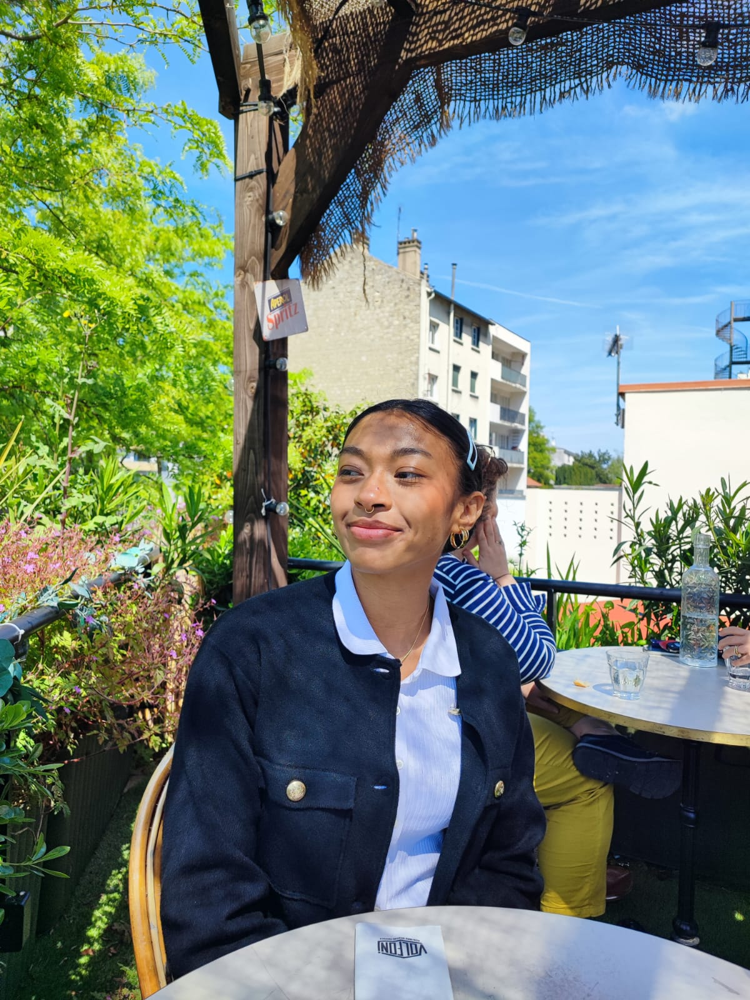

Joanne Andriamahandry
Frontend Developer
Passionate about digital design, I have developed a strong interest in creating intuitive and visually appealing websites. With proficiency in design tools like Figma and front-end languages, I am skilled at transforming innovative ideas into captivating user experiences. My background in design and ability to collaborate effectively with teams enable me to meet client needs successfully.
joanne.andriamahandry@example.com
+33 6 12 34 56 78
Paris, France
Skills
Design
- Figma
- Adobe Illustrator
- Adobe Indesign
- Canva
Development
- HTML/CSS
- JavaScript
- React
- Java
- Python
Education
CY Ecole de Design / CY Tech
2020 - Present
Computer science and design dual degree
Rosa Parks Highschool
2017 - 2020
Maths, Physics, Chemistry
Experience
City Hall
Receptionist
2022 - 2023
- Reception and guidance of the public to various municipal services.
- Scheduling appointments, preparing necessary documents for different departments, and managing access to these services.
Viapost
Press Operator
2021 - 2022
- Parcel sorting at intake.
- Teamwork for truck loading, out-of-scope parcel sorting, item collection, and room setup.
City Hall
Tremplin Citoyen
2020 - 2021
- Preparation of municipal events.
- Supervision, coordination, and participation in recreational activities.
- Visitor retention through customer-focused actions.